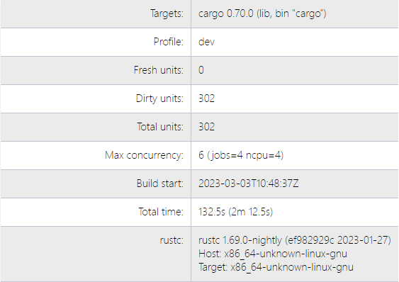
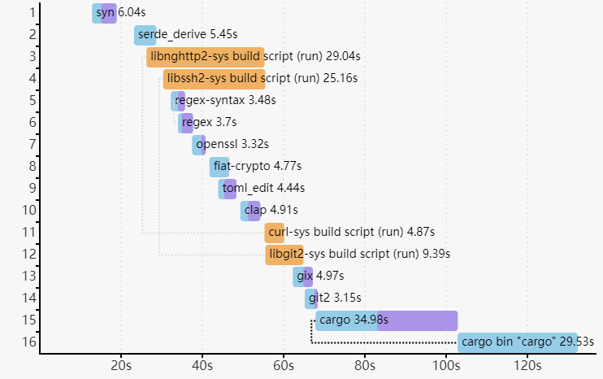
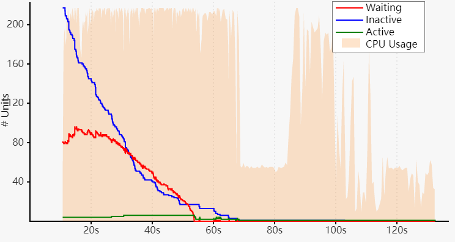

گزارش زمانبندی ساخت
گزینهٔ --timings اطلاعاتی دربارهٔ مدت زمان کامپایل هر واحد میدهد و اطلاعات همزمانی را در طول زمان دنبال میکند.
cargo build --timings
این دستور یک گزارش HTML در target/cargo-timings/cargo-timing.html مینویسد. همچنین اگر بخواهید اجراهای قدیمیتر را ببینید، نسخهای از گزارش را با مهر زمانی در نام فایل، در همان دایرکتوری ذخیره میکند.
خواندن نمودارها
در خروجی دو جدول و دو نمودار وجود دارد.
جدول اول اطلاعات ساخت پروژه را نشان میدهد، از جمله تعداد واحدهای ساختهشده، بیشینهٔ همزمانی، زمان ساخت و اطلاعات نسخهٔ کامپایلری که در حال استفاده است.

نمودار «unit» مدت زمان هر واحد را در طول زمان نشان میدهد. هر «unit» یک فراخوانی منفرد کامپایلر است. خطوطی وجود دارند که نشان میدهند وقتی یک واحد تمام میشود، کدام واحدهای دیگر «آزاد» میشوند. یعنی واحدهای جدیدی را نشان میدهد که حالا اجازهٔ اجرا دارند، چون همهٔ وابستگیهایشان تمام شده است. نشانگر ماوس را روی یک واحد نگه دارید تا خطوط پررنگ شوند. این کار میتواند به مصورسازی مسیر بحرانی وابستگیها کمک کند. این مسیر ممکن است میان اجراها تغییر کند، زیرا واحدها ممکن است با ترتیبهای متفاوتی تمام شوند.
زمانهای «codegen» با رنگ اسطوخودوسی مشخص میشوند. در برخی موارد، خط لولهٔ ساخت (build pipelining) اجازه میدهد واحدها وقتی شروع شوند که وابستگیهایشان در حال تولید کد هستند. این اطلاعات همیشه نمایش داده نمیشود (برای مثال، واحدهای باینری زمان شروع تولید کد را نشان نمیدهند).
واحدهای «custom build» همان اسکریپتهای build.rs هستند که هنگام اجرا با رنگ نارنجی مشخص میشوند.

نمودار دوم همزمانی Cargo را در طول زمان نشان میدهد. پسزمینه میزان استفاده از CPU را نشان میدهد. سه خط عبارتاند از:
- «Waiting» (قرمز) — تعداد واحدهایی است که منتظر آزاد شدن یک جایگاه CPU هستند.
- «Inactive» (آبی) — تعداد واحدهایی است که منتظر پایان وابستگیهایشان هستند.
- «Active» (سبز) — تعداد واحدهایی است که در حال اجرا هستند.

Note
این نمودار همزمانی درون خود کامپایلر را نشان نمیدهد.
rustcاز طریق «job server» با Cargo هماهنگ میشود تا در محدودهٔ همزمانی بماند. این موضوع در حال حاضر بیشتر دربارهٔ مرحلهٔ تولید کد صدق میکند.
نکاتی برای کاهش زمان کامپایل:
- نکاتی برای بهبود زمان کامپایل:
- به دنبال وابستگیهای کند بگردید. - بررسی کنید که آیا featureهایی دارند که شاید بخواهید غیرفعالشان کنید. - حذف کامل وابستگی را در نظر بگیرید.
- حذف کامل وابستگی را در نظر بگیرید.
- به دنبال crateای بگردید که چند بار با نسخههای مختلف ساخته میشود. سعی کنید نسخههای قدیمیتر را از گراف وابستگیها حذف کنید.
- crateهای بزرگ را به قطعههای کوچکتر تقسیم کنید.
- اگر تعداد زیادی crate روی یک crate واحد گلوگاه شدهاند، توجه خود را بر بهبود همان crate متمرکز کنید تا موازیسازی بهتر شود.
جدول آخر مجموع زمان و زمان «codegen» صرفشده برای هر واحد را فهرست میکند، همراه با featureهایی که هنگام کامپایل هر واحد فعال بودهاند.